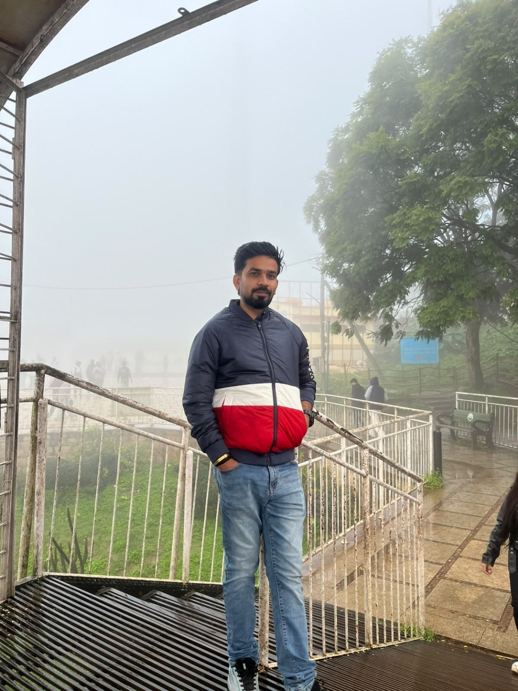
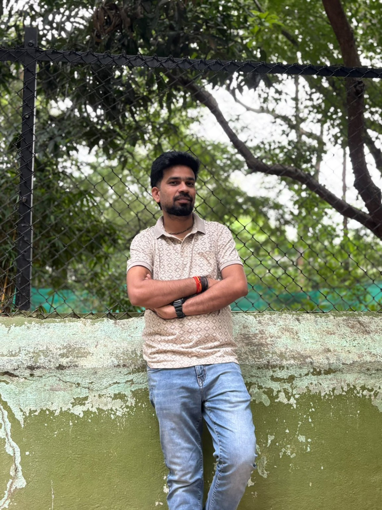

AWS Cloud Infrastructure
Managing AWS compute, storage, identity, monitoring and serverless services to support dependable cloud environments.
HELLO, I'M ASHWANI YADAV
DevOps Engineer | AWS Cloud Engineer
I automate cloud operations, streamline software delivery and improve infrastructure efficiency with AWS, CI/CD, Linux and Infrastructure as Code.

ASHWANI YADAV · DEVOPS & CLOUD ENGINEERI'm Ashwani, a DevOps Engineer with 3+ years of experience in AWS cloud infrastructure, CI/CD pipelines and Linux system administration.
My work focuses on automating deployments, improving operational reliability, optimizing cloud costs and supporting production environments. I work with development teams to make delivery workflows more consistent and infrastructure easier to operate.
I'm also expanding my hands-on capabilities in Kubernetes / EKS, Python automation, GitHub Actions, Prometheus and Grafana.
Connect on LinkedIn ↗Hands-on responsibilities across application monitoring, release deployments, incident coordination and cloud operations.
Managing AWS compute, storage, identity, monitoring and serverless services to support dependable cloud environments.
Building and maintaining delivery pipelines, replacing repetitive manual deployment steps with automated workflows.
Linux administration, scheduled maintenance, patching, backups, log rotation and operational troubleshooting.
Monitoring application and server health, reviewing cloud usage and identifying opportunities to optimize spend.
Tools and platforms listed in my professional experience and current learning roadmap.
“Currently building” identifies learning areas, not claimed production expertise.
Highlights drawn from the responsibilities and outcomes documented in my professional experience.
Designed and maintained AWS CodePipeline workflows and replaced manual deployment steps with Bash-based automation to reduce average release cycle time by approximately 40%.
Rightsized EC2 instances, decommissioned idle resources and introduced S3 lifecycle policies informed by CloudWatch usage data to reduce monthly AWS spend.
Built AWS Systems Manager Automation documents and scheduled Bash jobs to reduce recurring manual work involving patching, backups and log rotation.
Built serverless automation workflows using Lambda, Step Functions and SNS to support event-driven processes for internal development teams.
These highlights describe responsibilities and outcomes from professional experience. They are not presented as separate public repositories.
My professional journey in cloud engineering and application infrastructure.
Computer & Information Systems
Integral University · 2021Professional certification
As listed on my resumeAwarded in recognition of performance across automation and cloud infrastructure work.
Interested in DevOps, AWS Cloud Engineering and infrastructure automation opportunities? I'd be glad to connect.
BEYOND THE TERMINAL
A few moments outside my day-to-day cloud and DevOps work.
